Tensorflow Inspection for FWM Curves 180602
| Date: | Jul 6, 2018 |
|---|---|
| Last Updated: | Jul 20, 2018 |
| Categories: | |
| Tags: |

Contents
Introduction
In this project, we combine a deep-learning architecture with a traditional electromagnetic (EM) forward model which is differentiable. Since the model is differentiable, we could enable the gradient back propagated from the model to the deep-learning network. The following figure could be used to describe this design.
| The whole architecture of the project |
|---|
Suppose we have gotten a group of response samples (i.e. $\mathbf{y}$). In a traditional method, since we only have a formulated forward model $\mathcal{F}$, we need to use such an optimization to simulate the input of the model (i.e. $\mathbf{x}$). We call this process “inversion”.
where we define $\mathbf{y} := \mathcal{F}(\mathbf{x})$, thus $\hat{\mathbf{y}} := \mathcal{F}(\hat{\mathbf{x}})$.
Note that here the $\mathbf{x}$ is actually unknown, and we only know the response of it, thus there must be a misfit between the simulated input $\hat{\mathbf{x}}$ and the real input $\mathbf{x}$. The optimization could be essentially defined as a process to minimize the misfit. This method has such shortcomings.
- Take a long period to get a converged result.
- Easy to converge on a local minimum due to the highly non-linearity of the model.
- Could not make use of the priori information, because the model is independent for each sample.
To solve these problems, different methods are proposed. Some of them are aimed to improve the accuracy and some of them are aimed to accelerate the process. Our method is essentially using a forward deep learning network to replace the high-cost inversion algorithm. To make a comparison, we would also discuss about some baseline methods including the primal inversion, a look-up table method, a data-driven learning method and so on.
Baseline methods
Here we would discuss about some baseline methods some of which have been used in practice. We would perform the test scope on a laptop to examine their efficiency and accuracy. The configuration of the test machine is as below:
- Processor: Intel® Core™ i5-5200U CPU @ 2.20GHz, 2.19GHz
- RAM: 4.00GB
- OS: Windows 10 x64
Look-up table method
Theory
The idea of a look-up table could work because the forward EM model function is time-consuming. We generate a lot of samples that could exhaust the whole parameter space. Here we show an example in the figure below:
| The structure of a look-up table | The search method for simulating the forward model |
|---|---|
In this example, we have 3 parameters (A, B and C), each parameter is in the range of [0, 20). Hence we generate 20 points for each parameter and we could get 8000 ($20^3$) samples. If we place the samples in an increasing order, the index of the sample would vary from 0x0000 to 0x1F3F (suppose the data length of each sample to be 1).
Then we would have 2 tables. The first table (table X) stores the samples that we generate in the parameter space, the second table (table Y) stores the returned responses of the forward model. Therefore, we know that if we want to generate these tables, we need to perform the forward model for 8000 times. However, once the look-up tables are prepared, it would be no need for us to run the forward model function, because we could search one table to get the index, and use the same index to get the sample in the other table.
The right figure above shows that we even do not need to search table X if we want to simulate the forward model. Suppose that we have already know the parameters of a sample, and we want to get the response of this sample from table Y. We could use the value of the parameter to calculate the offset of this sample for each parameter and take the sum of these offsets. Then we could get the index of the sample. This is a trick of making advantage of the order of the stored samples. However, if we want to get the parameters when we have known the response, i.e. search table Y to get the sample in table X, we have to search the whole table Y by checking the sample with the smallest misfit as shown in $\eqref{fml:intro:misfit}$.
Whether we search the table or not, we do not need to run the forward model after the table generated. Thus the look-up table could help us guess the result fast. Denote $M$ as the sample number of each parameter, and $N$ as the number of parameters. If we search the table, the complexity is $O(M^N)$; If not, the complexity would be only $O(N)$.
Results
Generate the table
First, we generate two groups of tables. The first group has 10000 (10K) samples, the sum size of stored data is 74MB. The second one has 2359296 (2M) samples, the sum size of stored data is 1.70GB. To generating data by yourself, use this command:
python dumpfile.py
This script commit the core process to the C++ code, thus it could reach a higher efficiency. Both of these two scripts need us to modify parameters in the script. To learn the details about how to use the API, check this document:
Note that we also have a script which is written by purely python (except the part of forward model). This script is low-efficient, only could be used to produce a 3-layer model and used for a comparison. If you want to test it, call dumpfile_3layers.py. It is used totally the same as the highly efficient script.
To accelerate the generating process, we make use of a more powerful computer with 8 cores. The consumed time of the whole generation for the 2M table is:
| Python Code | C++ code |
|---|---|
| 20.95h | 4.18h |
Read the table
Similarly, we also have 2 scripts for reading the table. Use a code like this to do that:
python readfile.py -m i -ap model.npz -dp s_table -l 0
Here are the usages for each option:
| Option | Description | Default |
|---|---|---|
| -h | Check the help of the script. | |
| -m | The running mode of the script. (1) f: simulating the forward model. (2) i: simulating the inverse model. |
f |
| -ap | The path of the ground truth, it should contains two values named modelReal and measData. |
model.npz |
| -bp | The path of the database, it composes of 2 files with the postfix .fwdp and .fwdr respectively. |
s_table |
| -l | The dumpLevel of the C++ script. Note that when >0 the script would be slowed down. (1) 0: silent mode. (2) 1: show progress (3) 2: show detail loss. | 0 |
We also have a lowly efficient version of the script readfile_3layers.py with the same options. It is used to read the table produced by dumpfile_3layers.py. And this script is used for comparison, too.
The results of the look-up table are shown as below:
| The forward simulation by 10K table | The forward simulation by 2M table |
|---|---|
| 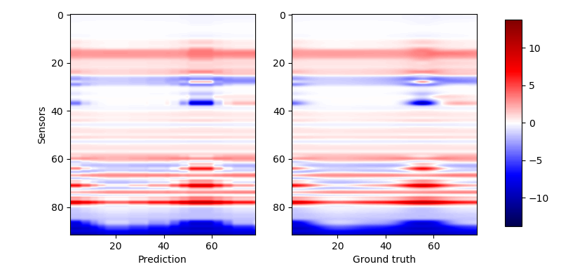 | 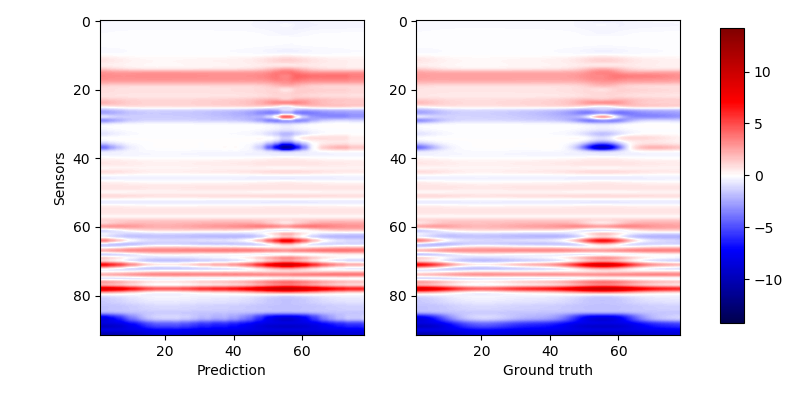 |
We use the row to represent the simulated signal of 92 sensors, and the column to represent the 80 samples. Each row in these figures represent a response curve over a period. To see the results clearly, we would like to show results of some sensors, i.e. some curves. The results are as below:
| The forward simulation by 10K table | The forward simulation by 2M table |
|---|---|
| 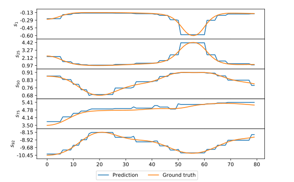 | 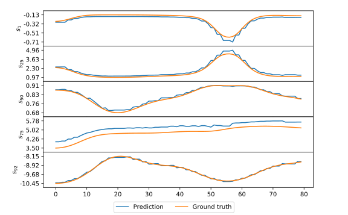 |
The results of the simulation for the inversion by the look-up table are shown in these figures:
| Ground truth | The inverse simulation by 10K table | The inverse simulation by 2M table |
|---|---|---|
We could find that it seems that the 2M table improves the precision, but it returns a worse prediction when it comes to resistivity. That is because the 10K table has a resistivity of 48 (which is very close to the real value, i.e. 50), however in the 2M table we only have resistivity like 39 or 63.
The consumed time of reading tables are recorded here. First, we compare the efficiency of different codes by testing with 10K table and 80 input samples:
| Test code efficiency with 10K table | ||
|---|---|---|
| C++ code | Python Code | |
| Inversion | 1.8048s | 6.7010s |
| Forward model | 0.0020s | 0.6655s |
Then we perform tests with different tables. The consumed time is shown as below:
| Test with different tables | ||
|---|---|---|
| 10K table | 2M table | |
| Inversion | 1.8048s | 68.73418s |
| Forward model | 0.0020s | 0.01560s |
Pure inversion by tensorflow
Theory
In this part, we use tensorflow to simulate the whole process of purely deterministic gradient descent inversion. In another word, our target could be formulated as $\eqref{fml:intro:misfit}$ where the only variable is the input (geophysical parameters) of the physical forward model. The architecture could be shown in the following figure.
| The whole architecture of the pure inversion |
|---|
Check here to see Levenberg–Marquardt algorithm in Wikipedia.
In general, we use a Hessian optimization method (like the Gauss–Newton algorithm) to deal with a complex and highly non-linear model. If we do not use Hessian matrix, we would prefer an algorithm like Levenberg–Marquardt algorithm (LMA). It only use Jacobian matrix and could solve the ill-posed problem somehow. However, here we need to use a machine learning frame, i.e. tensorflow to make the pure inversion, which makes us could not find available methods, because in a typical machine learning optimization, these methods requires high computational cost and could not give a stable solution. Thus we only have some simple and one-order methods like gradient-descent, adagrad, adelta and adam. An algorithm like above methods has been realized as an available optimizer offered by tensorflow. We could call and make use of it easily.
To realize this architecture in tensorflow, the key is converting a numerical computing model (i.e. a numpy-API function) to a symbol computing operator (i.e. a tensor-API op). To define an op, we need to define its forward operation and back-propagating operation. Here two figures show how we wrap the original model so that tensorflow could pass tensors to it and get tensors from it.
| Forward operator | Back-propagating operator |
|---|---|
If we only define the forward op, we could use the forward model in tensorflow but we could not train it. Because in tensorflow, the gradients are computed totally analytically. To make our model trainable, we need to tell tensorflow how to back-propagate the gradient in this op. Since this model accept a multi-dimensional input and give a multi-dimensional output, the only thing we need to do is just calculating the Jacobian matrix $\mathbf{J}$. Assuming that the gradient $\frac{\partial f}{\partial \mathbf{y}}$ from the upper layer is known (actually it is known during the back-propagation). Then the back-propagated gradient in this op is:
The computation of Jacobian matrix has been defined as a C++ API with the support of openMP. You could check the project here:
To improve the efficiency, in this project we use the batch computing version of the code.
Results
The result is shown in the following graph. The selected algorithm here is adam. We perform the inversion on my computer, it could be estimated that when we optimizing 80 samples, it takes about 11 seconds per step, thus the whole process requires 2.69 hours. We use the curve to show the MSE loss and give several snapshots of model during the whole optimization. The ground truth is shown in the northwest of the figure.
| The result of the pure inversion |
|---|
We could find that the process of convergence is very slow. To explain that, we would like to show the same data optimized by LMA. It only takes less than 300 steps and could converge to such a result.
| Ground truth | Result from LMA | Result from tensorflow |
|---|---|---|
 |
From these results, we could know that the adam algorithm could not converge as well as what LMA does, because the gradient is not balanced in this case. If we check the Jacobian matrices produced by forward model, we would know the the gradient from the resistivity is far stronger than that from the boundary position (ZBed). Since adam could not adjust the learning rate according to the parameters, here we would find that the resistivity would converge before the boundary. Actually in the real case the resistivity converge in 100 steps but it takes 900 steps for the boundary to converge.
Here we would check the consumed time by comparing different methods.
| LMA | adam |
|---|---|
| 7.20m | 2.69h |
The reason why LMA could reach a better result with far higher efficiency is that the LMA could adjust the learning rate according to the current gradients for each parameter. For example, if we have a function $f(x_1, x_2)$ with $\frac{\partial f}{\partial x_1} \gg \frac{\partial f}{\partial x_2}$, then the learning rate of $x_2$ would be amplified so that the gradients for each parameter could be balanced. This technique could improve the efficiency of the convergence. In fact, if we let the adam optimize for another 1000 steps, it would reach a better result which is similar to that of the LMA.
Data-driven neural networks
Another method is using a neural network to replace the model. Thus we have 3 ideas to make this replacement.
- Replace the primal forward model by a deep learning architecture, which means we still need to use this replaced model to make the inversion.
- Replace the inversion directly, i.e. training a network that plays a role as the inverse function of the primal forward model. Thus, we could replace the high computational cost inversion by a forward deep model.
- Use a GAN architecture. This technique could be used in the case of semi-supervised learning. We suppose that most of our samples have no ground truth, but we may still find a way to map the unlabeled data to the labeled space.
Simulate the inversion
Here we show the basic structure of this idea:
| Simulating the inverted model |
|---|
We use the look-up table which is generated before as our train set. Although this set has a lot of samples, it is still very sparse compared to the distribution of the real data. The test set is a generated continuous model where most samples do not appear in the train set. The model here we use is just a deep learning one. It accepts the response as the input and predict the geophysical parameters. We try to make the model regressed to the real geophysical parameters in the train set.
Network arrangement
Note that the deep learning network that we use could be an arbitrary network. In the simplest case, this network could be a 3-layer one:
| 3-layer network only composing of fully connected layers |
|---|
This model could accept N samples with a length of 92, then the input sample would be mapped to a hidden layer with 256 nodes. Finally, the hidden layer would be mapped to an output layer with 5 nodes. To balance the gradients, i.e. the scale between the resistivities (the first 3 parameters) and the boundary positions (the last 2 parameters), we use a re-biased layer and a scaling layer. This post-processing trick would be applied in the following other models. A re-biased layer could be formulated as:
where $\gamma$ and $\beta$ are trainable. And the scaling layer is just used for amplifying the values of resistivities, so that their gradients could match with those of the boundary positions.
A more complex model is a convolutional one. This model is adapted from the VGG16 network. We use 9 convolutional layers and 1 fully connected layer. In practice we find that too many fully connected layers may cause the performance downgraded.
| Convolutional network adapted from VGG16 |
|---|
To get a further step, we also try a residual model which is adapted from ResNet-50. The basic unit in this model is a residual block which contains 3 serial convolutional layers as a “bottleneck” structure. Since we have 20 residual blocks and 1 convolutional layer, it actually has 61 convolutional layers. This network is very deep compared the above two models.
| Residual network adapted from ResNet-50 |
|---|
For the convolutional networks, we could add an l2-regularization to each convolutional kernel so reduce the overfitting effect. Hence in the following part we would show the results in both the “with l2” case and the “without l2” case.
Train
We use adam optimizer with a learning rate of 1e-3 to train the networks for 80000 steps. Every step we select 64 samples randomly to build a batch and use this batch to update the network parameters. The training loss is shown as below:
| Training loss | |
|---|---|
| train | 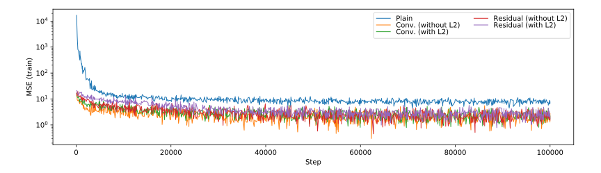 |
| valid |
We use our test set for validation, however, the “validation” is only a inspection, i.e. we do not influence the training process according to the situation of the validation. Thus we know the validation loss reflects the current performance on our test set during the training process. From the results, we could learn that:
- The network could get converged about 30000 steps, which is reasonable because the total number of samples in the train set is 2M. Considering every step we choose 64 steps, we would know that the network would be saturate before we iterate all samples.
- The valid loss is lower than the train loss, this may be caused by the continuity of the test samples. When we train the network, the network could interpolate the missing part in the train set, which could take effect on continuous data rather than random samples.
- The deep networks could reach an apparently better performance than the 3-layer model. But the very deep model (residual one) do not have an obvious advantaged when compared to the shallower model (convolutional one).
- Neither could Adding L2 regularization help the network get converged faster, nor it does not contribute an apparently better performance. In another words, adding L2 regularization may be not a good choice.
Test
The performance of the networks are shown in the following figures:
| Without Noise | $\sigma=0.1$ | $\sigma=0.5$ | |
|---|---|---|---|
| Ground truth | |
||
| Plain | 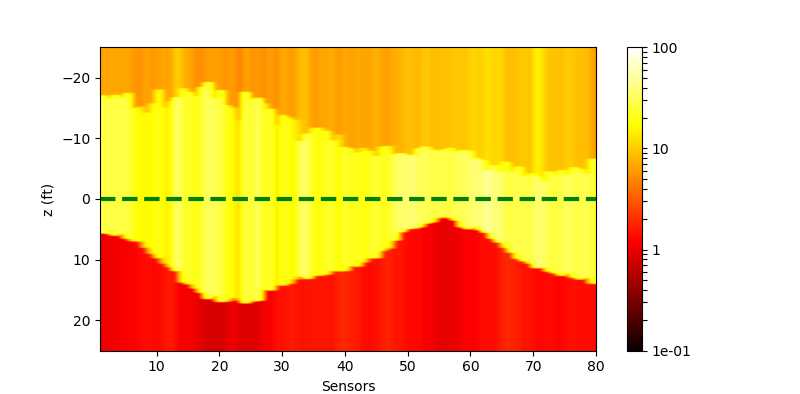 | ||
| Conv | 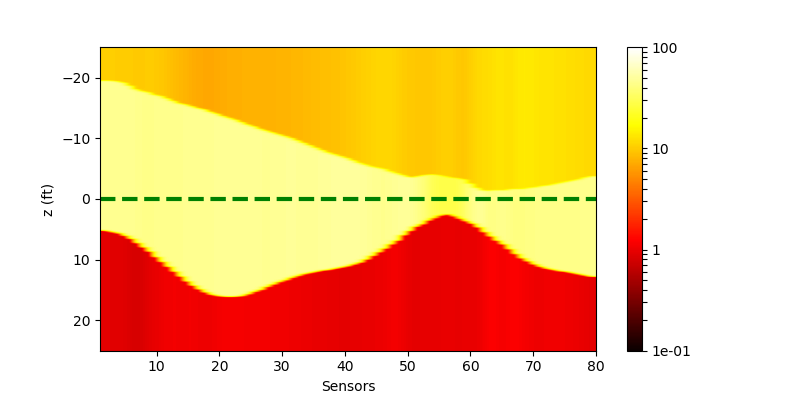 | ||
| Conv (withl2) | 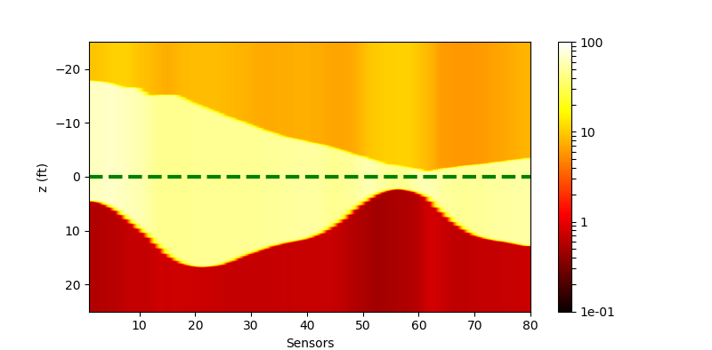 | 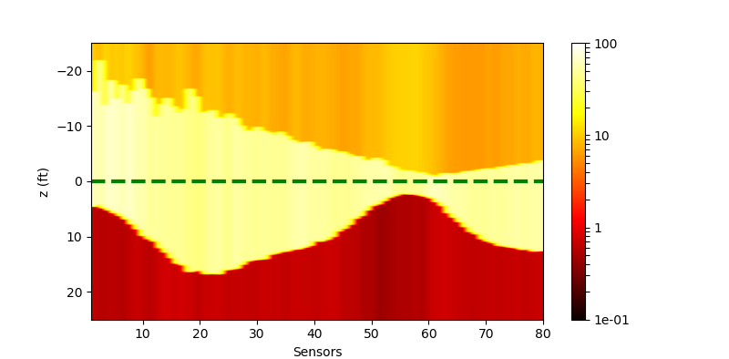 | |
| Residual | |||
| Residual (withl2) |
The costs of these network are
| Plain | Conv | Residual | |
|---|---|---|---|
| Time | 0.01562s | 0.28253s | 1.64054s |
| Memory | 295KB | 20.8MB | 92.0MB |
It shows that the residual network need a much heavier cost compared to the other 2 networks, but it could not give an obviously better performance compared to convolutional network. Maybe the 17-layer model has been capable to describe the inversion, which means a more complex model could not improve the efficiency.
Simulate the forward model
Simulating the forward model is similar to what we have done just before. It only needs us exchange the input and output each other compared to the simulation for inversion:
| Simulating the forward model |
|---|
We use the generated look-up table to train the forward simulating network, too. What we do here is exactly the same as simulating the inversion when considering the basic idea. An MSE loss is designed for the regression.
Network arrangement
The network that we use here is almost the same as the network for simulating the inversion, thus we would like to skip this part and talk about the results.
Train
We use the totally same configuration to train the networks and we also train for 80000 steps. The training loss is shown as below:
| Training loss | |
|---|---|
| train | 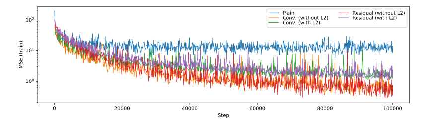 |
| valid |
The validation loss is produced by feeding the test set. From these results, we could find that:
- The performances between the convolutional network and residual network are almost the same.
- Adding L2 loss would reduce the performance of the model.
Test
The performance of the networks are shown in the following figures. We would show the predicted response for all curves. And we would also only inspect some curves to give a clearer view.
| All curves | Selected curves | |
|---|---|---|
| Ground truth | ||
| Plain | 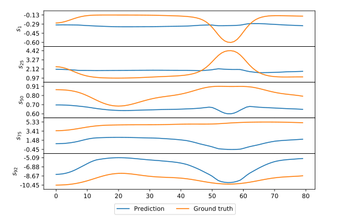 | |
| Conv | 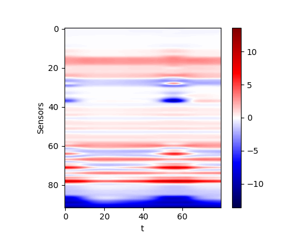 | |
| Conv (withl2) | 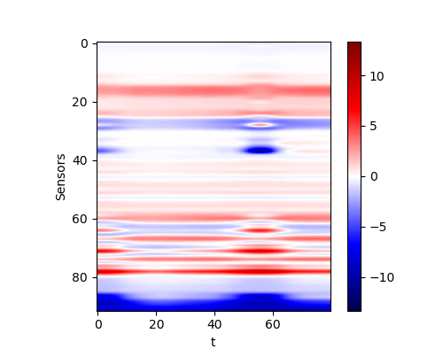 | |
| Residual | 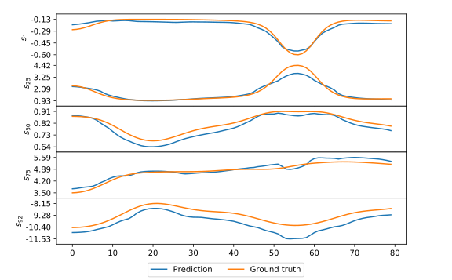 | |
| Residual (withl2) | 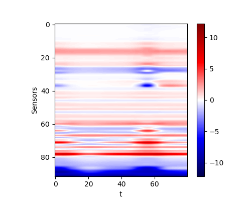 | 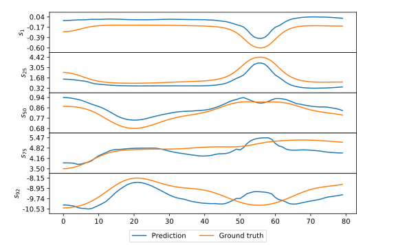 |
The costs of these network are
| Plain | Conv | Residual | |
|---|---|---|---|
| Time | 0.03126s | 0.35526s | 1.75713s |
| Memory | 298KB | 21.4MB | 92.6MB |
By comparing the performance and the cost, we could find that the same problem occurs here. If we only check the MSE loss, we would find that the more complex model does not reach a better performance. Thus we think the convolutional network is a capable model for this application. However, in practice, it seems that a deeper network could reach a better result. This conclusion may be not reliable since the deviation during the training is could definitely not be omitted.